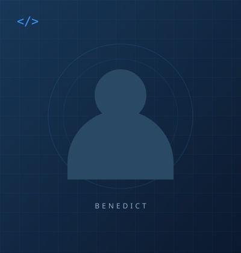

⌘
Frontend Development
5HTML5
#CSS3
JSJavaScript
Bringing ideas to life in the browser.
HELLO, I’M
I build simple, practical, and user-friendly digital experiences that solve real-world problems.
const developer = { name: "Benedict", role: "BSIT Student", passion: [ "Building things", "Solving problems" ], mindset: "Always learning" }; developer.buildTheFuture();▏
01 / ABOUT ME

I’m a Bachelor of Science in Information Technology student at La Consolacion University Philippines, with an interest in web development, programming, and building practical applications.
I enjoy figuring out how things work and turning ideas into something useful. Through my studies and projects, I’m developing my skills, exploring new tools, and learning to write thoughtful, maintainable code.
My goal is simple: keep learning and create digital experiences that make everyday life a little easier.
BS Information Technology
LCUP
Web development
Practical applications
Grow as a developer
Build with purpose
02 / MY TOOLKIT
A growing collection of languages and tools I’m exploring through coursework and projects.
Bringing ideas to life in the browser.
Learning the logic behind useful solutions.
A workspace for building and improving.
03 / SELECTED PROJECTS
A few projects that bring my interests and ideas together.
04 / THE NEXT CHAPTER
My education, projects, and growing experience, all in one place.
05 / GET IN TOUCH
Have a project in mind, an opportunity to share, or just want to say hello?
I’d love to connect and explore what we can build together.
Sample email — replace with your contact details before publishing.